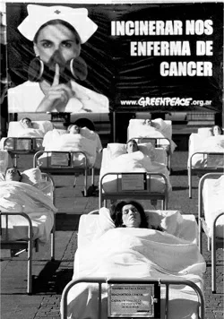

The oncologist's difficult February (2004)
Mukherjee begins this chapter by returning to the emotional world of his patients. In February 2004, several people under his care were dying or experiencing relapses. The pace of medicine could feel relentless: chemotherapy appointments, tests, symptoms, family discussions, and the constant possibility that treatment would fail.
One patient, Steve Harmon, was thirty-six and had cancer near the junction of his esophagus and stomach. His treatment caused severe nausea, and the disease was steadily wearing him down. He became intensely concerned with every small change in his weight, as though the numbers measured how much of his existence remained.
His children and other family members accompanied him to treatment. The hospital was not simply treating a tumor; it was watching a family struggle to preserve a future together.
Why Steve kept choosing treatment
Mukherjee asked whether Steve might prefer receiving chemotherapy privately, without the children sitting nearby. Steve explained that he understood the grim statistical outlook, but was continuing the treatment largely for his children.
This moment introduces a central question: what does a patient hope to gain from treatment? One person may accept a difficult procedure for a small chance of longer life. Another may value time at home without severe side effects.
Neither decision can be understood from a survival percentage alone. Patient goals, family responsibilities, suffering, and uncertainty all shape the meaning of a treatment.
Hope is not the same as a promise
Doctors have to communicate difficult truths without taking away every possibility of hope. Mukherjee contrasts reassuring someone with making a false promise. The first can help a patient confront uncertainty; the second can damage the patient's ability to make informed decisions.
He recalls the experience of Susan Sontag, whose later blood disease followed treatments for earlier cancers, and he describes the importance of thoughtful discussions with patients. He also observes a colleague, Thomas Lynch, speaking with a frightened woman about treatment.
The lesson is subtle: care sometimes means helping a patient understand an achievable next step, and sometimes means helping the patient face a treatment's limits.
The dangerous attraction of more powerful chemotherapy
In the 1980s, some oncologists believed chemotherapy failed against certain tumors simply because the dose was not high enough. The idea seemed straightforward: if cancer cells survived an ordinary dose, perhaps doubling or quadrupling the dose would kill them.
But cancer drugs also harm normal cells. The bone marrow, where new blood cells are produced, is particularly vulnerable to many cytotoxic drugs. A dose high enough to attack resistant cancer can destroy the patient's ability to make blood cells and fight infections.
So doctors asked a second question: could the marrow be rescued after the body received an otherwise intolerable dose of chemotherapy?
Understanding bone marrow transplantation
Bone marrow contains blood-forming stem cells that can produce the major types of blood cells. In a transplant strategy, doctors use intensive treatment and then provide stem cells to help rebuild blood production.
Two general approaches matter to this story:
- Autologous transplantation: The patient's own blood-forming cells are collected and later returned.
- Allogeneic transplantation: Blood-forming cells come from a donor.
These approaches are not interchangeable. Donor cells may add an immune attack against residual leukemia, but they can also cause severe immune complications. Returning a patient's own cells mainly provides marrow rescue; it does not automatically supply a separate anticancer immune effect.
Why transplantation was promising in leukemia
In some blood cancers, especially certain leukemias, high-dose treatment followed by stem-cell transplantation had shown important benefits. The strategy could destroy diseased marrow and then allow blood production to recover.
But extending this success to solid tumors such as breast cancer required new evidence. A treatment that works in leukemia does not automatically work in a tumor of the breast simply because both are called cancer.
This difference becomes crucial. Cancer is a collection of biologically different diseases, and the effects of increased drug dose may vary dramatically among them.

Tom Frei imagines defeating resistance with dose
Emil “Tom” Frei, a major figure in combination chemotherapy, believed more intensive drug treatment might overcome some forms of cancer resistance. He wanted to test very high doses of cytotoxic medicines against solid tumors and then restore patients' marrow using previously collected cells.
The new protocol became known as STAMP, short for Solid Tumor Autologous Marrow Program. The name captured the aggressive ambition of the period: press chemotherapy to the body's limit, then bring the patient back from that limit.
In theory, this could permit drug doses that would otherwise be too dangerous to administer. But whether it would prolong life remained an unanswered question.
William Peters joins the effort
In 1982, Frei recruited William Peters, a young physician and scientist, to help develop the high-dose chemotherapy program. Peters was energetic, highly educated, and deeply committed to the possibility of a breakthrough.
Laboratory studies in mice and presentations by researchers such as Frank Schabel encouraged the team. Some experiments suggested that high doses and drug combinations could eliminate more malignant cells.
But other physicians at the institute were skeptical. George Canellos, among others, worried that cancer cells surviving earlier treatment might already be highly resistant. Increasing the dose could injure the patient more severely without overcoming that resistance.
Why an attractive theory can mislead
Imagine two populations of cells: healthy bone marrow cells and malignant tumor cells. If increasing a drug dose damages both groups, the patient may become dangerously ill while the cancer continues surviving.
The scientific question is not simply whether the larger dose destroys more cells in a laboratory. It is whether the additional cancer control outweighs the additional harm and improves outcomes people care about, such as longer survival or better quality of life.
High-dose treatment sounded bold, especially in the language of a war against cancer. But courage and biological plausibility are not evidence of clinical benefit.
STAMP begins treating patients
With institutional approval, Peters and Frei began the early trial. The first participants had advanced breast cancer and few remaining treatment options. Patients underwent a profoundly demanding regimen of chemotherapy followed by the return of blood-forming cells.
The treatment could cause severe side effects and required specialized hospital support. Patients and clinicians monitored blood recovery, infections, organ damage, and signs that tumors were changing.
The first goal was to learn whether selected patients could survive the regimen at all. That is a safety and feasibility question, not yet proof of a cure.
A dramatic response creates excitement
One patient, a woman in her thirties with especially aggressive breast cancer, received STAMP and showed an unexpectedly striking reduction in visible cancer. Doctors crowded around her imaging results, excited that the tumor appeared to have melted away.
To Peters and Frei, this was the kind of response that could signal a major breakthrough. But one remarkable case cannot establish how long the improvement will last, whether it will recur, or how the treatment compares with less dangerous alternatives.
The chapter shows how individual success stories can create intense enthusiasm before reliable long-term evidence exists.

What Phase I studies can and cannot prove
By the mid-1980s, the early STAMP program had treated several dozen patients. The book describes a Phase I study that explored whether the regimen could be administered despite severe toxicity.
Phase I studies usually focus on safety, dose, and practical feasibility. Responses may be observed, but the design is not primarily intended to establish whether the new treatment improves survival compared with an existing treatment.
A treatment can be feasible and still fail in a later randomized trial. That distinction is central to understanding what happens to STAMP in the next chapter.
The AIDS epidemic enters the story
Mukherjee then describes the emergence of AIDS in the early 1980s. Young people, especially gay men in the first recognized American clusters, developed unusual infections and cancers because their immune systems were severely damaged.
One striking illness was Kaposi's sarcoma, a cancer that oncologists already knew could behave differently in immunocompromised people. Oncologists therefore played important roles in the early response to the AIDS crisis.
The diseases were different, but the hospital work required similar skills: handling complex illnesses, managing drug toxicity, fighting infections, and supporting frightened patients and families.
Ward 5B and a model of compassionate care
At San Francisco General Hospital, physician Paul Volberding helped establish Ward 5B, a specialized AIDS unit. Its organization drew lessons from cancer wards: multidisciplinary care, knowledgeable nurses, psychosocial support, and close attention to vulnerable patients.
The chapter is also about how stigma can intensify illness. AIDS patients often faced social hostility and isolation in addition to their medical problems.
The experience echoed the earlier history of cancer as a disease people were afraid to discuss openly.
Activism changes the language of medical trials
As AIDS deaths increased, activists criticized the slow processes by which experimental treatments were evaluated and approved. Figures such as Larry Kramer and groups such as ACT UP demanded faster access to promising medicines.
Their anger reflected real urgency. Patients facing a rapidly fatal illness could not always accept years of delay. But new treatments still needed reliable testing; otherwise, patients might be exposed to toxic procedures that did not actually help.
This created a tension between speed of access and strength of evidence. The debate would shape how patients later demanded high-dose chemotherapy for breast cancer.
A randomized trial is finally proposed
The enthusiasm for STAMP grew, but doubts remained about whether high-dose treatment really improved survival. Peters sought support for a large, randomized clinical trial through a cooperative research network.
The discussions were heated. Some oncologists argued that STAMP was merely very toxic chemotherapy under a glamorous new name. Others believed it represented the next great opportunity to defeat a resistant cancer.
Eventually, the group agreed to support a definitive study. That decision matters because a promising idea must face comparison with other treatments, even when the idea is emotionally attractive and its supporters are deeply committed.
Important concepts
| Concept | Meaning |
|---|---|
| STAMP | Solid Tumor Autologous Marrow Program |
| High-dose chemotherapy | Chemotherapy given at greater intensity, often with severe toxicity |
| Autologous stem-cell rescue | Returning a patient's own collected blood-forming cells after intensive treatment |
| Phase I trial | Early clinical study emphasizing safety and feasibility |
| Randomized trial | Study assigning treatments in a way designed to create fair comparison groups |
| Treatment resistance | Cancer's reduced or absent response to a particular treatment |
Final chapter takeaway
This chapter does not establish that STAMP was a successful treatment. It documents the reasoning and emotional energy behind the idea, alongside the growing demand for faster access to experimental medicine.
The central lesson is that hope is necessary in cancer care, but hope alone cannot tell us whether a difficult treatment helps. Stronger therapy is not automatically better therapy. Doctors must measure benefit, harm, and the goals of the people receiving treatment.